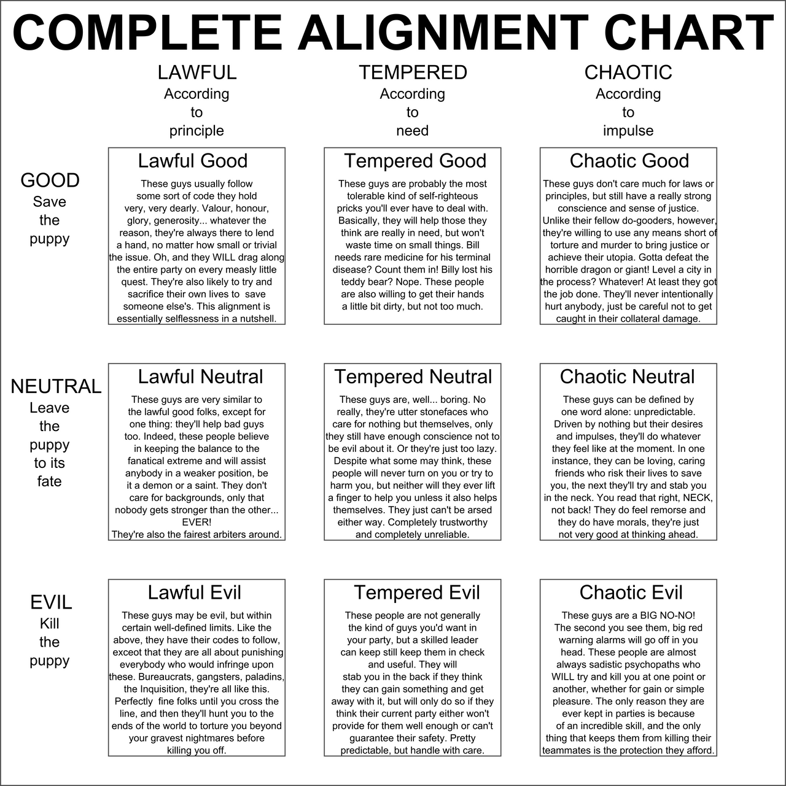

In many books, there is a clear distinction between the good characters and the evil characters. This is common in fantasy and dystopian books where there is a hero and a villian. For example, in The Lord of the Flies by William Golding, all the boys start off as good and inncocent; however, as they continue to stay on the island, one of the boys, Jack declares himself the leader of the hunting group and descends into savagery, becoming the representation of evil. Conversely, Ralph, the leader of the other group of boys, tries to keep everyone civilized and represents the good. In many books, the evil characters are there to provide challenges for the good characters to overcome and demonstrate their heroism compared to the actions of their evil counterpart. Furthermore, Good vs Evil is an universal theme within literature for many reasons, such as to make the story more interesting or explore different emotions and aspects of a character. But, in reality, there is no clear distinction between good and evil. There can be good people who do evil things and evil people that do good things. Also, the categories of "Good" and "Evil" are social constructs that based on what society believes is morally right or wrong.
In Dungeons & Dragons, characters and creatures are categorized based on their ethical and moral perspectives. To do so, there is a 3x3 grid chart that has the character's placement on the spectrum from law to chaos on the X-axis and the spectrum from good to evil on the Y-axis. Therefore, there's 9 different categories a character and creatures can fall into including lawful good, neutral good, chaotic good, lawful netural, true neutral, chaotic neutral, lawful evil, neutral evil, and chaotic evil. If the creatures in the game can't make decisions based on moral decisions and function on instinct alone, then they are "unaligned".
